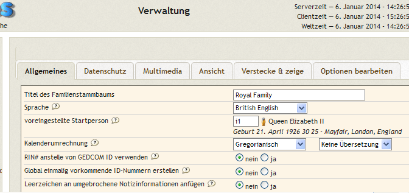

Verwaltungsseiten
Diese Seite liefert einige allgemeine Beschreibungen des webtrees Verwaltungsbereichs.
Inhaltsverzeichnis
Wie Sie Ihre webtrees Installation verwalten
Um in den Verwaltungsbereich zu gelangen, müssen Sie zuerst als Benutzer mit der Rolle "Administrator" (in der Regel der Benutzer, der bei der Ersteinrichtung von webtrees erstellt wurde) oder "Verwalter" angemeldet sein. Nach der Anmeldung sehen Sie im Hauptmenü unter Mein webtrees die Option "Verwaltung" (s. Bild). [HINWEIS: Ein "Verwalter" sieht nur eine begrenzte Anzahl von Verwaltungsoptionen und zwar nur auf den Stammbaum bezogen, für den ihm diese Rolle zugewiesen wurde.]
An verschiedenen Stellen werden Sie kleine "Hilfe-Symbole"  sehen, die Sie anklicken können, um eine kurze Erklärung der Funktion oder Seite, wo es angebracht ist, zu erhalten.
sehen, die Sie anklicken können, um eine kurze Erklärung der Funktion oder Seite, wo es angebracht ist, zu erhalten.
{kind=link}
Aussehen der Verwaltungsseite
Die Verwaltungsseite hat drei Hauptbereiche:
- Den Seitenkopf; er enthält einige grundlegende Informationen über Ihre webtrees Version, Zeiteinstellung Ihres Servers, Links auf die Hauptinstallation, verschiedene Sprachen und Abmelden.
- Eine Liste von Menüs auf der linken Seite. Diese werden benötigt, um auf die vielen verfügbaren Konfigurationsmöglichkeiten zuzugreifen.
- Der Bereich Inhalte, in dem jede Seite von Konfigurationsoptionen angezeigt wird, die Sie aus der Menüliste auswählen. Beim Betreten des Verwaltungsbereichs werden eine Zusammenfassung Ihrer aktuellen webtrees Version und eine kurze Begrüßungsnachricht angezeigt.Allerdings ist dies ein wichtiger Bereich, da er sich ändert, um Sie zu benachrichtigen, wenn ein webtrees Update verfügbar ist. HINWEIS: wir ermutigen Sie zum Update, sobald eine neue Version verfügbar ist. Neue Versionen enthalten Änderungen im Code, die Betrieb und Sicherheit beeinflussen, sowie Bugfixes.
Weitere Informationshinweise enthalten Angaben über
- Benutzer: Eine Übersicht über Anzahl und Art der Benutzer, den Sie für jeden installierten Stammbaum registriert haben
- Stammbäume: Einige der wichtigsten Statistiken über jeden Ihrer Stammbäume
- Neueste Änderungen: Eine kurze Übersicht über die Zahl der vorgenommenen Änderungen bei jedem Ihrer Bäume nach Tag, Woche und Monat.
Hier können gelegentlich auch weitere Hinweise auftauchen; z.B. wenn eine neue Version von webtrees verfügbar ist oder ein Hinweis nach einem Update, der Sie über Dateien der vorherigen Version informiert, die nicht mehr benötigt werden.
{kind=link}
Menüs
{kind=link}
Die Menüliste links ist in Gruppen oder Kategorien unterteilt: Verwaltung; Stammbäume; Benutzer; Multimedia; Module; Spezialmodul-Konfigurationen (Aktualisierung per Stapelverarbeitung, Geschichten, Google Maps, etc...).
[HINWEIS: Manche Benutzer erkennen nicht, dass der Titel jeder dieser Gruppen ebenfalls 'anklickbar' ist und Verknüpfungen zu einer weiteren Konfigurationsseite enthält, die dann im Inhalte-Bereich angezeigt wird.] Die angezeigte Seite oder Konfigurationsseite wird in der Menüliste hervorgehoben dargestellt.
Jede dieser Gruppen wird später noch näher erläutert, aber hier ist ein Überblick über ihre Bestimmung:
Verwaltung
Zugänglich NUR für Benutzer mit der Rolle "Administrator". Diese ganzen Optionen zeigen oder konfigurieren Funktionen, die die gesamte Website betreffen. (Details siehe unten)
Stammbäume
Der Link "Stammbäume" ist nur für Benutzer mit der Rolle "Administrator" zugänglich. Dies beinhaltet Funktionen zum Hochladen/Herunterladen und Löschen von Stammbäumen. Die Links darunter (in kursiv) zu jedem einzelnen Stammbaum sind auch für Benutzer mit der Rolle "Verwalter" FÜR DEN JEWEILIGEN BAUM zugänglich. Sie bieten jeweils eine große Auswahl von Konfigurationsmöglichkeiten bezogen auf einen einzelnen Stammbaum.
Benutzer
Der Link "Benutzer" selbst öffnet eine Liste aller Benutzer (der ganzen Seite) und die Möglichkeit, ihre Kontodaten zu bearbeiten. Darunter sind eine Reihe von weiteren benutzerbezogenen Seiten mit (hoffentlich) selbsterklärenden Titeln.
Multimedia
Die Seite "Multimedia" bietet Zugriff auf alle Medienobjekte der gesamten Webseite. Sie können mit den Optionen auf dieser Seite aufgelistet, bearbeitet, gelöscht und bewegt und persönliche Objekte können hochgeladen werden. Es gibt eine eigene Seite für das Hochladen von Kleinserien von Medienobjekten alle in einem Arbeitsgang.
Module
Der Link "Module" erstellt eine Liste aller Module auf Ihrer Website innerhalb der aktuellen Umgebung. Sie können hier nicht nur aufgelistet, sondern auch je nach Ihren Vorstellungen aktiviert oder deaktiviert werden. Alle hier vorgenommenen Änderungen gelten für die ganze Webseite. Darunter sind Seiten, auf denen Sie die Darstellung, Erreichbarkeit und in einigen Fällen Position jedes einzelnen Moduls konfigurieren können (Menüs; Reiter; Blöcke; Navigationsleiste und Berichte).
Spezialmodul-Konfiguration
Wenn ein Modul seine eigenen Konfigurationsoptionen oder Verwaltungsfunktionen besitzt UND in der Modul-Liste als "aktiviert" markiert ist, wird es in diesem letzten Abschnitt (in kursiv) aufgeführt.
Verwaltung
Seiteneinstellungen und Mail-Konfiguration
Dieser Abschnitt der Verwaltungsseite umfasst zwei Teile, Webseiten- und E-Mail-Konfiguration jeweils mit einer eigenen Registerkarte. Mit dem ersten Merkmal können Sie Änderungen an verschiedenen Webseiten-Konfigurationsoptionen, die bei der Ersteinrichtung gewählt wurden, überprüfen und vornehmen. Sie können
- Ihr Datenverzeichnis ändern, außerhalb Ihres Ordners für öffentlichen Zugriff (obwohl dies nicht notwendig sein sollte);
- Ihre Speichergrenze bis zu der in Ihrer Master-Datei php.ini festgelegten Grenze anpassen. Einstellungen für einen größeren Wert als Ihre php.ini-Einstellungen sollten ignoriert werden, können jedoch zu Systemfehlern führen;
- Ihr PHP-Zeitlimit für Skripte anpassen. Einstellungen für einen größeren Wert als Ihre php.ini-Einstellungen sollten ignoriert werden, können jedoch zu Systemfehlern führen;
- Ihre Nachrichten Ablagemöglichkeiten ändern;
- Ihre Konto-Registrierung für Besucher ändern;
- Ihr Genehmigungsverfahren zur Konto-Registrierung ändern. Seien Sie vorsichtig, diesen Wert auf NEIN zu setzen, das bedeutet ein neues Konto vor dem Zugriff einer neuen Person auf Ihre Website NICHT zu überprüfen und zu genehmigen.
- Benutzern erlauben, Themen innerhalb ihrer eigenen Kontoeinstellungen zu ändern;
- das Standard-Thema auf der gesamten Website für Besucher wählen;
- Besuchern und registrierten Benutzern erlauben, Stammbäume zu wechseln, wenn Ihre Webseite mehrere Bäume bietet;
- Ihre Sitzungs-Zeitbeschränkung ändern. In Sekunden eingestellt, wird dies Benutzer automatisch abmelden, die sich versehentlich nicht abgemeldet haben.
- Ihre bevorzugte Webseiten-Adresse einstellen, wenn mehrere Adressen existieren (siehe Hilfe);
- Ihre Anmelde-Adresse einstellen. Siehe Hilfe, aber in den meisten Fällen sollte dieses Feld leer bleiben.
Mit dem zweiten Merkmal können Sie die Art der E-Mail-Kommunikation, die Sie verwenden möchten, wählen. Dies kann von den Möglichkeiten und Werkzeugen abhängen, die auf Ihrem Server aktiviert sind. Sie können
- für Nachrichten wählen und festlegen, ob Sie via PHP Mail (falls aktiviert), über SMTP oder gar keine Nachrichten aus dem System senden;
- Ihren SMTP-Servernamen oder für PHP Mail den Namen Ihrer Domäne eingeben;
- Ihren SMTP-Server-Port für ausgehende Mail eingeben, entweder Port 25 (falls aktiviert) oder vielleicht Port 587. Die Konfiguration wird Ihrem Standard-E-Mail-Client oder Mail-Server-Anweisungen (GMail, Yahoo, MSN, etc.) ähneln;
- das Kennwort für Ihr E-Mail-Konto eingeben (noch mal, was Sie für Ihren E-Mail-Client tun würden, um dieses Konto zu verwenden);
- Ihre Server-Sicherheitsmethode wählen (in der Regel keine, aber falls erforderlich - ssl oder tls);
- ein gültiges E-Mail-FROM-Konto eingeben (entweder für PHP- oder SMTP-Mail);
- ein gültiges E-Mail-SENDER-Konto eingeben. Dies ist wahrscheinlich die gleiche Adresse wie im vorherigen Eintrag. Ein Eintrag ist erforderlich, damit das System richtig funktioniert.
Besuchen Sie das webtrees.net Forum und verwenden Sie die Suche, um ausgefallene oder ungewöhnliche Diskussionen zu verwandten Themen zu finden und zu überprüfen.
Protokolle
Diese Funktion ermöglicht Ihnen, in den Verwaltungsprotokollen die meisten protokollierten Änderungen zu überprüfen. Eine Filter-Option erlaubt die Überprüfung bestimmter Tätigkeits-Arten. Einzelheiten zu Veränderungen an Stammbaumdaten werden im Bereich Stammbäume -> Änderungsverlauf aufgezeichnet und nicht hier.
README Datei / Dokumentation
Die Readme-Datei enthält viele wichtige Hinweise zur Installation und Einrichtung.
PHP Informationen
Ähnlich wie eine INFO.php Datei, aber weitaus sicherer, können Sie mit dieser Funktion sowohl Ihre Master- als auch lokale PHP.ini Einstellungen sehen.
Zugangsregeln
Diese Funktion ersetzt die bisherige Option "Seiten verwalten" und wurde geschrieben, weil die Entwickler viele E-Mails bekommen von Leuten, die nach Updates für webtrees fragen, um einen bestimmten Robot zu blockieren, der Probleme auf ihrer Webseite verursacht. Damit können sie es jetzt selber machen.
Es besteht keine Notwendigkeit, etwas mit dieser Option zu tun. Sie wurde so konzipiert, dass webtrees perfekt funktioniert, auch wenn Sie sie einfach ignorieren. Es wird nicht empfohlen, die universellen Standardbrowser-Zugriffsregeln zu löschen, weil Sie damit einfach den Zugang zu Ihrer Webseite von Standard-Browsern blockieren. Aber wenn Sie bestimmte Dinge aktiv verwalten möchten, sollten Sie anfangen, ein wenig mehr Informationen über jeden Ihrer "nicht erkannten Besucher" herauszufinden:
- Verwenden Sie whois.net, um herauszufinden, wer die IP-Adresse besitzt.
- Verwenden Sie user-agent-string.info, um ein wenig mehr über den User-Agent-String herauszufinden.
- Überprüfen Sie Ihre Webserver-Protokolle, um zu sehen, ob er zu häufig auftaucht und welche Art von Anfragen er macht.
Nachdem die Seite eine Zeit lang verwendet wurde, wird sie etwa wie folgt aussehen:
{kind=link}
Die obere Hälfte der Seite sind bestehende Regeln. In diesem Fall sind einige Standardwerte, die mit webtrees geliefert werden und damit "normalen" Browsern Zugriff auf die Webseite erlauben, und andere Regeln, die später hinzugefügt wurden.
In der unteren Hälfte sind die "nicht erkannten Besucher", die möglicherweise später eine Regel erfordern, um ihren Zugang zu verwalten.
Was Sie mit diesen Informationen tun, hängt davon ab, wie aggressiv Sie den Zugriff auf die Webseite einschränken wollen.
Denken Sie auch daran, dass User-Agent-Strings leicht gefälscht werden. Jeder kann eine Anfrage mit einem UA String senden wie: Mozilla/5.0 (compatible; Googlebot/2.1; +www.google.com/bot.html)
Die meisten Robots sind harmlos. Sie neigen nur zu Problemen, wenn sie zu häufig auftauchen und zu viele Server-Ressourcen verbrauchen.
Aber es ist wichtig, sie zu identifizieren. Zum Beispiel wollen wir nicht, dass sie Zugriff auf die Kalender-Seite haben. Falls sie den Verknüpfungen folgen würden, kämen sie schließlich auf eine fast unendliche Anzahl von Seiten.
Also folgen hier ein paar Beispiele für persönliche "Regeln":
- Ich benutze den w3validator Service, um zu überprüfen, dass webtrees fehlerfreies HTML erzeugt. Er muss in der Lage sein, alle Seiten zu sehen, und ich unterstelle, dass nur Seiten besucht werden, die speziell angefordert wurden. Er sendet den UA "W3C_Validator/1.3" und nutzt viele verschiedene IP-Adressen, aber whois.net sagt mir, dass sie alle zum MIT und zum Netzblock 128.30.0.0 bis 128.30.255.255 gehören. Also habe ich diesen besonderen UA und IP-Bereich "erlaubt", so dass er die gleichen Seiten, die echte Besucher sehen würden, sehen können.
- Mein ISP (Talktalk) hat eine lästige Angewohnheit, mir überall hin zu folgen. Immer wenn ich eine Website besuche, leiten sie meine Anfrage auch an eine Überwachungsgesellschaft, die 30 Sekunden später die gleiche Seite besucht. Sie behaupten, sie prüfen auf Malware, aber mit etwas Skepsis/Paranoia weiß ich nicht unbedingt, ob ich ihnen glauben soll. Daher sind 62.24.222.131 und 62.24.222.132 blockiert, was immer sie für einen UA senden.
- Wie die meisten von euch, erhalte ich viele Besuche von googlebot. Anstatt dies global zu erlauben, lasse ich es einfach nur von Adressen aus ihrem Netzblock zu - nach vorheriger Prüfung, dass es tatsächlich zu google gehört. Also setze ich eine "Robot"-Regel für 66.249.64.0 - 66.249.95.255 - Mozilla/5.0 (compatible; Googlebot/2.1; +www.google.com/bot.html). Wenn auf diese Weise ein anderer Robot versucht, google zu imitieren, werde ich es erfahren - und werde ihn wahrscheinlich blockieren.
Ich finde, dass viele Robots meine robots.txt-Datei ignorieren und somit in meiner Liste "nicht erkannter Besucher" erscheinen. robots.txt zu ignorieren *könnte* Grund genug sein, sie zu blockieren. Aber für den Moment, überwache ich nur meine Protokolle und werde sie nur blockieren, wenn sie beginnen Fehlverhalten zu zeigen oder Probleme zu verursachen. Zur Zeit sammle ich jedoch vor allem Informationen und überwache meine Protokolle.
Datenordner bereinigen
Diese Funktion ermöglicht es Ihnen, bestimmte Dateien aus Ihrem Datenverzeichnis, die unnötig oder veraltet sind, zu entfernen. Es gibt keine Notwendigkeit mehr, eine Kopie Iher Stammbaum-Daten (GEDCOM) in diesem Ordner zu behalten, da alle Daten nun innerhalb der SQL-Datenbank aufbewahrt werden und diese Datei schnell veraltet, wenn Sie Änderungen vornehmen, und daher keine Sicherung bietet.
Stammbäume
Allgemeines
Klicken Sie auf "Stammbäume" und Sie gelangen auf eine Seite, deren Aussehen davon abhängt, ob Sie einen Stammbaum installiert und ob Sie einen oder mehrere Bäume haben. Es ist auch die Seite, auf die Sie kommen, wenn Sie erstmals den webtrees Installationsprozess abschließen. Das folgende Bild zeigt eine typische Seite mit einem einzigen installierten Baum.
{kind=link}
Die Seite hat zwei Teile, einen oberen Bereich, in dem vorhandene Bäume aufgelistet sind, und einen unteren Bereich, wo ein neuer Baum erstellt oder hinzugefügt werden kann.
Im oberen Bereich wird ein Bedienfeld wie in dem Bild hier für jeden Baum auf Ihrer Website angezeigt. Für jeden Baum gibt es fünf Möglichkeiten:
- Export: Dies erstellt eine GEDCOM-Datei aus Ihrer Datenbank und speichert sie mit dem hier angezeigten Namen in Ihrem webtrees/data Verzeichnis. Ihre komplette GEDCOM-Datei wird gespeichert ohne Möglichkeit, Datensätze aus Datenschutz- oder anderen Gründen zu beschränken.
- Import: Verwenden Sie diese Option, um eine GEDCOM-Datei in Ihre Datenbank zu importieren, nachdem Sie sie zuvor in Ihr webtress/data Verzeichnis hochgeladen haben. Dies ist in der Regel nur notwendig für GEDCOM-Dateien, die größer als das PHP Datei-Upload-Limit Ihrer Website sind (oft durch Ihren Service-Provider auf 2 MB gesetzt). Wenn Sie eine Datei importieren, erhalten Sie eine Warnung, dass dies alle Ihre GEDCOM-Daten, die bereits vorhanden sind, überschreibt. [HINWEIS: Sobald der Import abgeschlossen ist, sollten Sie die GEDCOM-Datei aus Ihrem /data Ordner löschen. Sie wird von webtrees zu keiner Zeit verwendet oder aktualisiert und kann durch die "Export"-Funktion neu erstellt werden, falls Sie sie jemals brauchen.]
- Herunterladen: Wie beim "Export" wird durch die Funktion "Herunterladen" eine neue Stammbaum-Datei (GEDCOM) aus Ihrer Datenbank erstellt. Jedoch, anstatt eine vollständige Kopie Ihres Stammbaums ohne Sicherheit auf den Server zu legen, wird die Datei auf Ihrem lokalen Computer abgelegt unter Einbeziehung mehrerer Optionen wie zum Beispiel: Speichern der Datei als "zip"-Datei; Einschränkung der Daten bezogen auf verschiedene Benutzertypen (Besucher, Mitglied, Verwalter) je nach Ihrer Datenschutz-Konfiguration; und einige andere Optionen.
- Hochladen: Sehr ähnlich zu "Import", aber nützlicher für kleinere Dateien. In diesem Fall müssen Sie die Datei nicht zuerst in das webtrees/data Verzeichnis hochladen. Es kann von jedem beliebigen Ort auf dem Desktop-Computer hochgeladen werden. Außerdem wird die Datei selbst direkt in die Datenbank hochgeladen, so dass keine Kopie auf Ihrem Web-Server gespeichert und nichts nach Abschluss gelöscht werden muss. Dies ist die beste Option, wenn der Server die Datei-Größe akzeptiert (auf vielen Servern vielleicht weniger als 5 MB).
- Löschen: Diese Option wird nur benötigt, um einen Stammbaum von Ihrer Webseite vollständig zu entfernen. Alle Daten für diesen Stammbaum werden aus der Datenbank gelöscht. Daher verwenden Sie sie mit Vorsicht. Wenn der Baum wichtig ist, stellen Sie sicher, zuerst ein Backup zu erstellen, entweder mit den "Export" oder "Download"-Optionen.
Einen neuen Stammbaum erstellen
Im unteren Bereich der Seite bietet eine Option, einen neuen Stammbaum zu erstellen. Wenn Sie gerade eine frische webtrees Installation ausgeführt haben, werden Sie mit dieser Option Ihren ersten Stammbaum erstellen. Wenn Sie eine bestehende (GEDCOM) Stammbaum-Datei haben, können Sie sie importieren, nachdem Sie einen neuen Baum erstellt haben, und ersetzen damit den zuvor erstellten Platzhalter. Der Name, den Sie Ihrem Baum geben, wird verwendet, um Adressen und Dateinamen zu generieren, deshalb sollten Sie etwas Kurzes, Einfaches wählen und Satzzeichen und Leerzeichen vermeiden. Wenn Sie künftig für Exporte eine ".ged" (oder eine andere) Dateiendung haben möchten, dann sollten Sie es dem Namen, den Sie hier verwenden, hinzufügen.
Während dieser Name nach der Erstellung nicht einfach geändert werden kann, ist es dennoch NICHT der Anzeigename für Ihren Stammbaum. Ihr Anzeigename kann einfach erstellt und/oder innerhalb der Sektion Stammbaum-Konfiguration jederzeit verändert werden. Als Beispiel können Sie "kennedy" oder "kennedy.ged" als Stammbaumnamen eingeben, aber geben Sie "Robert F Kennedy Stammbaum" im Feld "Titel des Familien-Stammbaums" ein. Das eine hat nichts mit dem anderen zu tun.
Sobald ein Baum erstellt wurde, können Sie Daten aus einer GEDCOM-Datei wie oben beschrieben hochladen oder importieren. Für jeden neuen Baum, den Sie hinzufügen möchten, sollten Sie dasselbe Verfahren befolgen; Erstellen -> Importieren -> Konfigurieren/Verwalten. webtrees verlangt jedoch nicht, eine Stammbaum-Datei (GEDCOM) zu importieren. Sie können auch einen neuen Stammbaum ohne GEDCOM (ganz von vorne) durch die Erzeugung des neuen Baums beginnen, dann die Daten (Name, Geburtsdatum, etc.) der Beispiel-Person, die im neuen "Stammbaum" angelegt ist, ändern. Gehen Sie auf die Startseite und wählen die dort gezeigte Beispiel-Person aus, dann ergänzen Sie die Daten und Verwandten dieser Startperson.
Ihr Stammbaum
Für jeden Stammbaum, den Sie auf Ihrer Webseite erstellen, gibt es eine Verknüpfung. Ein Klick auf einen dieser Links zeigt eine Reihe von Registerkarten an, wo viele Aspekte von Benutzung, Zugriff und Darstellung des jeweiligen Stammbaums konfiguriert werden können. 
{kind=link}
Unter jeder dieser Registerkarten gibt es umfangreiche Konfigurations- (Einstellungs-) Optionen. Die Einstellungen können das Aussehen und Verhalten Ihrer Webseite und die Funktionalität vieler für Ihre Benutzer zur Verfügung stehenden Werkzeuge dramatisch beeinflussen. Sie können den Zugang kontrollieren, Formulare modifizieren, Felder hinzufügen und die Bearbeitung beschränken. Sie sollten jede dieser Registerkarten überprüfen, um sich mit den verfügbaren Optionen zur Verwaltung Ihrer webtrees Webseite vertraut zu machen. Hilfe ist für viele Optionen verfügbar, um ihre Funktion zu beschreiben, und ihre Zahl ist zu groß, um hier Beschreibungen zu liefern.
Zusammenführen von Datensätzen
{kind=link}
Eine der am häufigsten gestellten Fragen für jedes Programm zur Familiengeschichte ist, wie man zwei Stammbaum-Dateien (GEDCOM) zusammenführen kann.
webtrees hat eine ausgezeichnete Mischfunktion (Verwaltung -> Stammbäume -> Datensätze zusammenfügen), aber sie bezieht sich nur auf einzelne Instanzen der Schlüsselsatz-Typen: INDI, FAM, SOUR und NOTE. Jeder Datensatz, der zusammengefügt werden soll, kann entweder im gleichen Stammbaum oder zwei getrennten Stammbäumen auf derselben webtrees Webseite existieren. Diese Funktion stellt mit einem Vergleich nebeneinander liegender Tafeln eine Methode bereit, mit der Sie auswählen können, welche Fakten zu erhalten sind, wenn Sie die Daten zusammenführen (siehe Bild). Dieses Verfahren ist nur für Stammbaum-Verwalter und Administratoren verfügbar, da es sehr mächtig ist und die vorher unabhängigen Informationen zerstört. Datei:VerwaltungDatensätzeZusammenfügen2.png
{kind=link}
Um ganze Stammbäume (GEDCOMs) zusammenzuführen, müssen Sie andere verfügbare Programme außerhalb von webtrees nutzen. Um ehrlich zu sein, zu versuchen, zwei verschiedene Dateien erfolgreich zu verschmelzen, ist sehr schwierig. webtrees verfügt derzeit weder über diese Möglichkeit, noch ist sie später als zusätzliches Modul geplant. Die notwendigen Algorithmen, um jeden Datensatz zu vergleichen und zu versuchen, intelligente Entscheidungen über die Duplizität der Informationen zu fällen, sind sehr komplex und der Interpretation vorbehalten. Dies gilt vor allem, wenn man die Möglichkeit bedenkt, dass jeder Stammbaum sehr unterschiedlich sein kann, bei der Formatierung der Originaldaten (abweichende Konventionen), sowie der Qualität und Quantität von Informationen in jedem Stammbaum über jede Person, Familie, Ort, Ereignis und Quelle. Das Ergebnis kann viel mehr Arbeit erfordern, um die Übernahme der wichtigen Daten in den resultierenden Stammbaum zu überprüfen und die Bereinigung von deren Formatierung vorzunehmen (Namen großgeschrieben, Orte unvollständig, etc.).
Es gibt Hilfsprogramme auf PC-Plattform, mit GENMERGE als eines der anerkanntesten, und auf MAC-Plattform, GEDITCOM, die eine ausgezeichnete Arbeit beim Zusammenführen von Stammbäumen leisten. Bäume zusammenzuführen ist jedoch viel einfacher (und vielleicht immer noch eine schlechte Idee wegen der Formatierungs-Unterschiede) als ein wahrer Übereinstimmungs- und Verschmelzungs-Prozess. Als Folge der oben genannten Faktoren empfiehlt webtrees nicht, Stammbäume zusammenzuführen.
Nicht verknüpfte Datensätze hinzufügen
{kind=link}
Diese Option ermöglicht es (nur) für Administratoren, Personen, Quellen oder gemeinsame Notizen, die nicht mit einem anderen Datensatz (Querverweise) im Stammbaum verbunden sind, zur Datenbank hinzuzufügen.
Dies kann unter bestimmten Umständen eine nützliche Funktion sein, muss aber mit Vorsicht verwendet werden. Es wäre sehr einfach, mit dem Werkzeug einen sehr "chaotischen" Stammbaum mit vielen unverbundenen, schwer zu findenden, Datensätzen zu erstellen. Darum ist der Zugang zu dem Werkzeug auf Administratoren beschränkt.
Fehlersuche
Dies ersetzt und aktualisiert das alte "gedcheck.php" Modul. Sie können Ihre Datenbank nun online überprüfen! Keine Notwendigkeit, zuerst in eine Datei zu exportieren oder anstehende Änderungen zunächst zu akzeptieren. Es ist von Grund auf neu geschrieben und meldet nur ernste Sachverhalte.
Gehen Sie unter Verwaltung auf Fehlersuche. Dann wählen Sie Ihren Stammbaum (falls Sie mehr als einen haben) und klicken auf "Fehlersuche".
Die Ergebnisse werden auf derselben Seite angezeigt, nach einem kurzen "Schlüsselwort" oder Erklärung der wichtigsten Fehler-Arten. Derzeit sind dies:
- Dies kann Fehler in webtrees verursachen.
- Dies kann Fehler in anderen Anwendungen verursachen.
- Dies kann ein Fehler in Deinen Daten sein.
Andere Arten können später ergänzt werden. Wenn Sie keine Fehler haben, erscheint die einfache Meldung "Es wurden keine Fehler gefunden.".
Alle Fehler der Kategorie "kann Fehler in webtrees verursachen" sollten sofort behoben werden. Jeder Fehler hat eine kurze Erklärung des Problems und einen Link zu dem Datensatz, der korrigiert werden muss.
Fehler der Kategorie "kann Fehler in anderen Anwendungen verursachen" sind für den reibungslosen Betrieb von webtrees nicht wichtig. Im Allgemeinen sind das Datensätze, die "inoffizielle" GEDCOM-Merkmale verwenden und nicht von jeder Software erkannt werden. Es gibt nur eine sehr kleine Anzahl davon in webtrees selbst, aber vielleicht haben Sie einige aus einem früheren Software-Produkt importiert. In den meisten Fällen versucht webtrees oft erfolgreich Import und Anzeige solcher Elemente, aber man kann nicht sicher sein, dass eine andere Software das ebenfalls kann. Wir empfehlen Ihnen daher, diese zu überprüfen und zu versuchen, sie mit einem richtig verwendeten Standard GEDCOM Element zu ersetzen. Sie können hierzu Hilfe auf den webtrees.net Forum-Seiten finden.
Wenn webtrees so konfiguriert ist, dass die Anzeige von GEDCOM Fehlern (Verwaltung -> Ihr Stammbaum -> Verstecke & Zeige -> Allgemeines - GEDCOM Fehler) auf verbergen steht, dann werden diese Elemente möglicherweise nicht angezeigt. Daher empfehlen wir Ihnen, die Anzeige von solchen Fehlern zu aktivieren, falls das Werkzeug Ihnen diese Fragen zur Überprüfung vorschlägt.
Benutzer
Der Menü-Titel Benutzer ist selber ein Link und liefert eine Liste aller Benutzer (der ganzen Webseite) und die Möglichkeit, ihre Kontodaten zu bearbeiten. Diese Benutzer-Liste hat eine Filterfunktion im oberen rechten Teil der Kopfzeile, die Ihnen helfen kann, Ihre Liste zu sichten. Der kleine grüne Kreis mit Plus-Symbol links neben dem Namen des Benutzers erweitert die Optionen zur Benutzerkonfiguration. Es ist wichtig, jede Option zu überprüfen und ihr einen beabsichtigten Wert zu geben. Einzustellen sind "voreingestellte Startperson", "Personendatensatz" (INDI) und "Benutzer-Rolle". Damit werden Benutzer richtig unter "Mein webtrees" angezeigt und sind für "Mein Konto" und "Mein Datenblatt" vorkonfiguriert, aber auch andere Diagramme und Datenschutz für Beziehungen werden beeinflusst.
Unterhalb des Menupunkts "Benutzer" gibt es weitere benutzerbezogene Seiten mit (hoffentlich) selbsterklärenden Titeln.
Standard-Blöcke anordnen
Es sei darauf hingewiesen, dass die Festlegung der Standardblöcke vorhandene Benutzer nicht zurücksetzt, sondern nur für neu hinzugefügte Benutzer gilt, nachdem Sie den Standardwert eingestellt haben. Eine Standard-Einstellung ist vorhanden, aber es ist eine wichtige Funktion, die Sie überprüfen sollten, um die für Ihre Benutzer verfügbaren Blöcke möglicherweise zu ändern.
Multimedia
Sollten Sie ausschließlich mit webtrees, Medien wie zum Beispiel Bilder hochladen wollen, kann das selbsterklärend unter dem Menüpunkt "Mein webtrees" - "Verwaltung" und dann im linken Menübaum "Multimediadateien hochladen" auswählen, gemacht werden. Bei Problemen schauen Sie sich hierzu die Hilfe-Informationen an.
Damit auch Benutzer mit geringen Übertragungsraten webtrees schnell, auch mit Bildern im Stammbaum benutzen können, sollten die Bildgrößen klein gehalten werden.
Als Richtwert gilt, ca. 1024 Pixel an der längsten Seite mit 72dpi. (dots per inch - Punkte pro Zoll).
Das ist für eine durchschnittliche Bildschirmdarstellung der genutzten Monitore, stand heute, ausreichen.
Sollen die Bilder in der Diashow größer oder kleiner dargestellt werden, können Sie die Pixel-Anzahl mit einem Bildverarbeitungsprogramm verändern.
Wenn Bilder auch druckbar sein sollen, rechnen Sie diese in 300dpi um.
Achtung:
Sie sollten die Bilder größer und mit mehr Pixeln einscannen und in einen Ordner ablegen, der als Ausgangsordner für die Umrechnung der Bilder dient. Die Umgerechneten Bilder speichern Sie zum Beispiel in einen Ordner towebtrees1024dpi. Dann werden die Bilder immer von der besseren Auflösung in die schlechtere umgerechnet. Halten Sie diesen Weg ein! Erst recht, wenn Sie schon ein komprimiertes Format wie jpg für die Basisbilder nutzen, sonst werden die Bilder schnell unschön.
Auch die Farbtiefe ist für die Dateigröße der Bilder wichtig. Wenn Sie ein wenig auf Farbqualität verzichten können, also von 24bit auf 16bit oder sogar 8bit, werden die Bilder deutlich kleiner.
Alte schwarz/weiß- Bilder sollten Sie auch in Graustufen scannen.
Mit diesen Maßnahmen können Speicherprobleme bei günstigen hostings mit wenig Speichervolumen umgangen werden.
So, nun sind die Bilder vorbereitet.
Wenn Sie die Medien mit einem FTP-Program in die Verzeichnisstruktur übertragen wollen, sind einige Dinge zu beachten.
- Nutzen Sie ein eigenes Ahnenforschungsprogramm auf Ihrem Rechner, das eine GEDCOM-Datenbank-Datei erstellen kann, die Sie irgendwann in webtrees importieren möchten, müssen die Bilder, die später in webtrees angezeigt werden sollen, auch eine Verknüpfung zu einer Person oder anderen GEDCOM-Daten haben. Nun können Sie die Bilder mit einem FTP-Programm auf den Hosting-Server in das Verzeichnis /webtrees/data/media laden.
Beachten Sie bitte folgendes:
Sie haben die Bilder auf ihrem Windowsrechner zum Beispiel in einen übergeordneten Ordner c:\Familie\Ahnen\towebtrees1024dpi abgelegt. Diesen Pfad speichert natürlich auch Ihr Ahnenforschungsprogramm in der GEDCOM-Datenbank. Wenn Sie nun irgendwann die GEDCOM-Datenbank von Ihrem Rechner per FTP auf den Hostingserver in das Verzeichnis /webtrees/data kopieren um diese in webtrees zu importieren, kennt webtrees diesen Pfad nicht.
Also müssen Sie, bevor die GEDCOM-Datenbank in webtrees importiert wird, webtrees mitteilen, dass es den Pfad c:\Familie\Ahnen\ ignorieren soll. Das machen Sie in der Verwaltung, Stammbäume, Stammbaum xy, unter der Karte Multimedia. Hier tragen Sie unter "GEDCOM Medienpfad" in das Feld den Pfad ein. In diesem Beispiel: c:\Familie\Ahnen\ Achten Sie hier darauf, dass sie den Pfad mit dem \ so angeben wie auf Ihrem Rechner.
So, nun können Sie Ihre GEDCOM-Datenbank importieren. Das machen Sie in der Verwaltung, Stammbäume unter der Auswahl "Import". Dort wählen Sie Ihre, in dem Pfad /webtrees/data kopierte GEDCOM-Datenbank aus. Das Auswahlfeld, vor dem etwas missverständlichen Text, aktivieren Sie in diesem Fall nicht.
Hier der Text:
Wenn Sie die Medienobjekte in webtrees erstellt haben und Sie Ihre GEDCOM-Datei mit Hilfe einer anderen Software auf Ihrem Computer erstellt oder bearbeitet haben, die Medienobjekte löscht, dann aktivieren Sie dieses Feld, damit die aktuellen Medienobjekte mit der neuen GEDCOM verknüpft werden.
Kurz nachdem Sie den Import gestartet haben, legt webtrees in dem Verzeichnis /webtrees/data/media eine neue Pfadstuktur an. In /webtrees/data/media/thumbs erzeugt webtrees die Vorschaubilder. Die anderen Pfade richten sich nach den Pfaden auf Ihrem Rechner, in dem Sie die Medien abgelegt haben. In diesem Beispiel also: /webtrees/data/media/thumbs/C:/Familie/Ahnen/. Diese Pfade werden meines Wissens nicht benutzt.
- Nutzen Sie ausschließlich webtrees, können Sie die Bilder nun mit einem FTP-Programm auf den Hosting-Server in das Verzeichnis /webtrees/data/media laden und die Verknüpfungen zu den Personen oder anderen Daten in webtrees machen.
Was die Vorschaubilder angeht, gilt hier das gleiche wie oben beschrieben.
Es klappt nicht, was nun?
Suchen Sie Ihre Fehlermeldung in den Foren. In der Regel finden Sie dort Hilfe.
Was oft hilft, aber eine neue Anpassung der webtrees-Einstellungen nach sich zieht, ist das Hochladen der GEDCOM-Datenbank. Also kein Import. Beim Hochladen werden alle Einträge in der webtrees-Datenbank gelöscht und neu angelegt. Wenn Sie dabei einen anderen Stammbaumnamen nehmen, können Sie quasi erst testen. Die alte Stammbaum-Datenbank bleibt dann mit allen Einstellungen erhalten und Sie können die Einstellugen in Ruhe anpassen.
Achten Sie hiebei auf genügend freien Speicher in Ihrer Hostingumgebung.
Schauen Sie nach, ob auf Ihrem Hostingserver PHP-Speicher Fehler auftreten. Es muss genügend PHP-Speicher, abhängig von der Menge der Bilder, von Ihrem Provider zur Verfügung stehen.
So, nun viel Spaß mit webtrees.
--Werner (Diskussion) 09:44, 29. Mär. 2015 (UTC)
Module
Aktualisierung per Stapelverarbeitung
Für diesen Abschnitt fehlt eine Beschreibung.
Geschichten
Für diesen Abschnitt fehlt eine Beschreibung.
Google Maps™
Siehe Google_Maps_Modul.
Häufige Fragen (FAQ)
Siehe FAQ-Seite_erstellen.
Sitemaps
Sitemaps dienen dem Webmaster dazu, Suchmaschinen die Seiten zu nennen, die zur Suche freigegeben sind. Alle wichtigen Suchmaschinen unterstützen Sitemaps. Für weiterführende Informationen siehe www.sitemaps.org. Verwenden Sie diese Verwaltungs-Seite, um auszuwählen, welcher Ihre Bäume (falls Sie mehrere haben, hat jeder ein Auswahlfeld) in die Sitemaps Ihrer Website aufzunehmen sind. Nach Anhaken der entsprechenden Auswahlboxen klicken Sie auf Speichern.
Unser Sitemaps-Modul erzeugt sie dynamisch, wenn eine Suchmaschine sie braucht, bezogen auf die Adresse, die Sie in Ihrer Robot-Datei eintragen. Das ist großartig, da das für die Suchmaschinen bedeutet, dass sie IMMER die neueste Version Ihrer Daten bekommen. Es bedeutet auch, dass es ein "einstellen und vergessen" Prozess ist. Es wendet auch aktualisierte Datenschutz-Einschränkungen an und unterteilt Ihre Webseite in kleine, leicht zu handhabende XML-Dateien für die Überprüfung der Suchmaschinen.
Bitte überprüfen Sie die Seite Verwaltung -> Sitemaps für spezifische Anweisungen und Text für Ihre Webseite. Verwenden Sie den Abschnitt am unteren Ende: Um Suchmaschinen über das Vorhandensein von Sitemaps zu informieren, sollte folgende Zeile in die Datei robots.txt eingefügt werden. Sitemap: http://dev.webtrees.net/demo-stable/module.php?mod=sitemap&mod_action=generate&file=sitemap.xml
Besuchen Sie die Sitemaps Hinweisseite jeder Suchmaschine, um festzustellen, wie man sie dazu auffordert, Ihre neuen Sitemaps zu verwenden. Die aktuellen Adressen sind unten auf der Seite Verwaltung -> Sitemaps verlinkt. Vorlage:Überprüfung